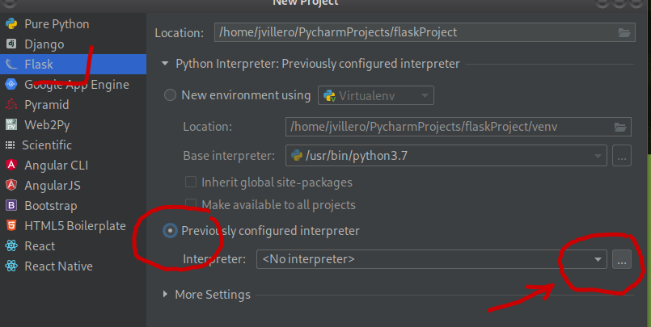
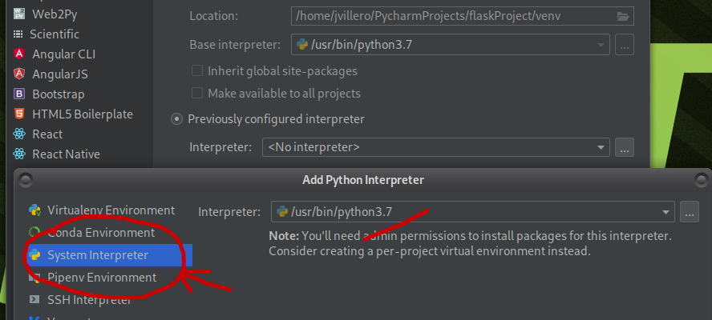

Il existe plusieurs bibliothèques différentes pour exécuter du SQL à l’aide du langage python (au travers d’un connecteur). On procède de la même manière en php, en javascript, ou dans d’autres langages. La tendance est de passer par des ORMs mais c’est plus compliqué de première abord.
Le choix de la bibliothèque (driver) pour exécuter du SQL va dépendre du SGBDR
| id_produit | nom |
|---|---|
| mysql | PyMySQL,MySQL/connector, MySQLdb |
| postgreSQL | psycopg2 |
| Oracle | cx_Oracle |
| SQL server (microsoft) | pyodbc |
| sqlite | sqlite3 |
| mongodb | pymongo |
voici 2 liens : un comparatif des drivers, un petit article sur stackoverflow
Afin de connecter Python avec une base de données via un Driver (le connecteur), il existe des bibliothèques qui servent à interagir avec la base de données. Avec le SGBDR MySQL vous avez principalement le choix entre 3 drivers :
Ces bibliothèques se ressemblent beaucoup :
PyMySql semble un très bon choix. MySQL/connector est propriétaire. Pour la suite des TPs, on utilisera PyMySql mais on comparera avec MySQL/connector et PyMySql.
Installation de pymysql
pip install PyMySQLPS : mariadb possède aussi une bibliothèque mais elle semble moins utilisée
exemple sur le site W3Schools : MySQL/connector for Python
copier/coller du site W3Schools
Créer un fichier avec l’exemple ci-dessus , exemple de nom de fichier test1_pymysql.py
Remplacer la connexion avec celle de pymysql
#! /usr/bin/python
# -*- coding:utf-8 -*-
import pymysql.cursors
# mysql --user=votreLogin --password=votreMotDePasse --host=serveurmysql --database=BDD_votreLogin
mydb = pymysql.connect( #pymysql.connect remplace mysql.connector
host="serveurmysql", #localhost sur les machines perso.
user="votreLogin",
password="votreMotDePasse",
database="BDD_votreLogin",
charset='utf8mb4', # 2 attributs à ajouter
cursorclass=pymysql.cursors.DictCursor # 2 attributs à ajouter
)
mycursor = mydb.cursor()
mycursor.execute("CREATE TABLE customers (id INT AUTO_INCREMENT PRIMARY KEY, name VARCHAR(255), address VARCHAR(255))")
sql = "INSERT INTO customers (name, address) VALUES (%s, %s)"
val = ("John", "Highway 21")
mycursor.execute(sql, val)
mydb.commit()
print(mycursor.rowcount, "record inserted.")
sql = "INSERT INTO customers (name, address) VALUES (%s, %s)"
val = [
('Peter', 'Lowstreet 4'),
('Amy', 'Apple st 652'),
('Hannah', 'Mountain 21'),
('Michael', 'Valley 345'),
('Sandy', 'Ocean blvd 2'),
('Betty', 'Green Grass 1'),
('Richard', 'Sky st 331'),
('Susan', 'One way 98'),
('Vicky', 'Yellow Garden 2'),
('Ben', 'Park Lane 38'),
('William', 'Central st 954'),
('Chuck', 'Main Road 989'),
('Viola', 'Sideway 1633')
]
mycursor.executemany(sql, val)
mydb.commit()
print(mycursor.rowcount, "was inserted.")
mycursor.execute("SELECT * FROM customers")
myresult = mycursor.fetchall()
for x in myresult:
print(x)python exercice1_pymysql.py
Fermer la connexion : opération très simple avec un simple script python, c’est un peu plus compliqué sur un serveur web, il faut fermer la connexion à chaque requête HTTP, sinon le serveur risque d’avoir des problèmes de fuite de mémoire.
Il faut créer un objet objet-connexion à l’aide de la fonction-fabrique connect().
Cet objet assure l’interface entre votre programme et la base de données.
Après avoir importé une instance de l’objet bibliothèque (driver), il faut utiliser la méthode .connect() de la bibliothèque dans laquelle on passe plusieurs paramètres :
#! /usr/bin/python
# -*- coding:utf-8 -*-
import pymysql.cursors
mydb = pymysql.connect( #pymysql.connect remplace mysql.connector
host="serveurmysql" #localhost sur les machines perso.
, user="votreLogin"
, password="votreMotDePasse"
, database="BDD_votreLogin"
#, port=3306 # sur mamp(mac) le port peut être 8889 ...
, charset="utf8mb4" # 2 attributs à ajouter
, cursorclass=pymysql.cursors.DictCursor # 2 attributs à ajouter
)L’objectif est d’utiliser comme interface un navigateur Web. De fait une interface Web propose des interfaces avec en arrière plan des requêtes de type SELECT, INSERT, UPDATE, DELETE
Il faut créer un curseur c’est un autre objet-interface. Il s’agit d’une sorte de tampon mémoire intermédiaire, destiné à mémoriser temporairement les données en cours de traitement, ainsi que les opérations que vous effectuez sur elles, avant leur transfert définitif dans la base de données. Cette technique permet donc d’annuler si nécessaire une ou plusieurs opérations qui se seraient révélées inadéquates, et de revenir en arrière dans le traitement, sans que la base de données n’en soit affectée.
Exécuter une requête en utilisant l’objet connexion
curseur = connexion.cursor()
curseur.execute(sql, tuple_parametres)Remarques
connexion.commit() est indispensable pour valider la requête de type INSERT, UPDATE, DELETE
Pour annuler la requête, on peut utiliser connexion.rollback()
Lors du passage de paramètres, if faut faire attention aux injections
⚠️ => Ne jamais former une chaîne de texte avec la concaténation de texte (instruction SQL) et de paramètres de la requête HTTP (INPUT du formulaire par exemple)
Pour INSERT, UPDATE, DELETE, on récupère le même résultat que sur un terminal : le nombre d’enregistrements affectés par la requête. La méthode rowcount d’un curseur permet de connaître le nombre d’enregistrements affectés (utilisation : mycursor.rowcount).
Pour SELECT, on récupère :
mycursor = mydb.cursor()%s%s result=mycursor.execute(sql, tuple)[] peut remplacer un tuple python ()commit avec la connexion, exemple de commande : mydb.commit()script SQL pour les exercices
Créer un fichier SQL avec la base (table article) du tp précédent
DROP TABLE IF EXISTS article;
DROP TABLE IF EXISTS type_article;
CREATE TABLE type_article (
id int(11) NOT NULL AUTO_INCREMENT,
libelle varchar(50),
PRIMARY KEY (id)
-- UNIQUE KEY libelle (libelle)
);
INSERT INTO type_article VALUES (NULL,'Fourniture de bureau');
INSERT INTO type_article VALUES (NULL,'Mobilier');
INSERT INTO type_article VALUES (NULL,'Mobilier Jardin');
INSERT INTO type_article VALUES (NULL,'Arrosage');
INSERT INTO type_article VALUES (NULL,'Outils');
INSERT INTO type_article VALUES (NULL,'Divers');
CREATE TABLE article (
id int(11) NOT NULL AUTO_INCREMENT,
nom varchar(50),
disponible tinyint(1) DEFAULT 0,
type_article_id int(11),
prix int(11),
stock int(11),
description varchar(500),
image varchar(100), -- photo
PRIMARY KEY (id),
-- UNIQUE KEY nom (nom),
CONSTRAINT fk_article_type_article FOREIGN KEY (type_article_id) REFERENCES type_article (id)
) ;
INSERT INTO article(nom,disponible,prix,stock,type_article_id,image) VALUES
('Enveloppes (50p)',1,2.00, 3,1,NULL),
('Stylo noir',1,1.00,13,1,'stylo.jpeg'),
('Boite de rangement',1,3.00,12,1,'boites.jpeg'),
('Chaise',1,40.00,3,2,'chaise.jpeg'),
('Tables',1,200.00,3,2,'table.jpeg'),
('Salon de Jardin alu',1,149.00,3,3,'salonJardin2.jpg'),
('Table+6 fauteuils de Jardin',1,790.00,3,3,'tableFauteuilsJardin1.jpg'),
('Set Table + 4 bancs',1,229.00,3,3,'setTableChaises.jpg'),
('arrosoir bleu',1,13.50,3,4,'arrosoir1.jpg'),
('arrosoir griotte',1,9.90,3,4,'arrosoir2.jpg'),
('tuyau arrosage',1,31.90,3,4,'tuyauArrosage1.jpg'),
('tournevis',1,23.90,3,5,'lotTourneVis.jpg'),
('marteau menuisier',1,7.80,3,5,'marteau.jpg'),
('pince multiprise',1,21.80,3,5,'pinceMultiprise.jpg'),
('perceuse',1,149.80,3,5,'perceuse.jpg');
SELECT * FROM type_article;
SELECT * FROM article;Tester une requête pour modifier le champ libelle par “Mobilier Intérieur” pour le type d’article ayant un identifiant égal à 2. Ces données sont dans des variables : libelle, id_type_article.
#! /usr/bin/python
# -*- coding:utf-8 -*-
import pymysql.cursors
mydb = pymysql.connect( #pymysql.connect remplace mysql.connector
host="serveurmysql", #localhost sur les machines perso.
user="votreLogin",
password="votreMotDePasse",
database="BDD_votreLogin",
charset='utf8mb4', # 2 attributs à ajouter
cursorclass=pymysql.cursors.DictCursor # 2 attributs à ajouter
)
mycursor = mydb.cursor()
libelle="Mobilier Intérieur"
id_type_article=2
tuple_update = (libelle,id_type_article)
sql ="UPDATE type_article SET libelle =%s WHERE id >= %s;"
print(sql)
mycursor.execute(sql, tuple_update)
mydb.commit() # connection
print(mycursor.rowcount, "was updated.")
mydb.close()tester une requête pour modifier le nom, le prix, le stock, la photo pour l’article ayant l’identifiant 15. Ces données sont dans des variables : nom, prix, stock et image (par la suite on utilisera les données d’un formulaire HTML )
Après avoir créé une connexion sur la base de données, tester le code ci dessous :
nom="perceuse visseuse"
prix=139.9
stock=5
id_article=15
image="no_photo.jpeg"
tuple_update = (nom,prix,code_stock,image,id_article)
sql = "ma_commande_SQL => à modifié !"
print(sql)
mycursor.execute(sql, tuple_update)
mydb.commit() # connection
print(mycursor.rowcount, "was updated.")
mydb.close()SELECT id, nom, prix, stock, image, disponible, type_article_id FROM article;)Tester une requête pour ajouter un article de libelle “Jardinage”.
#! /usr/bin/python
# -*- coding:utf-8 -*-
import pymysql.cursors
mydb = pymysql.connect(
host="localhost",
user="votreLogin",
password="votreMotDePasse",
database="BDD_votreLogin",
charset='utf8mb4',
cursorclass=pymysql.cursors.DictCursor
)
mycursor = mydb.cursor()
libelle="Jardinage"
tuple_insert = (libelle,)
sql ="INSERT INTO type_article(libelle) VALUES (%s);"
print(sql)
mycursor.execute(sql, tuple_insert)
mydb.commit()
print("Tuple ajouté avec succès dans la table article avec id = ", mycursor.lastrowid)
mydb.close()SELECT idEtudiant, nom, adresse, ville, code_postal, boursier FROM Etudiant;)tester une requête pour inserer un article avec le nom, le prix, le stock, la photo pour l’article ayant l’identifiant 15. Ces données sont dans des variables : nom, prix, stock et image (par la suite on utilisera les données d’un formulaire HTML )
Après avoir créé une connexion sur la base de données, tester le code ci dessous :
nom="pelle"
prix=25.5
stock=7
disponible=1
image="no_photo.jpeg"
type_article_id=None # en python None remplace NULL en SQL dans un tuple
tuple_insert = (nom,prix,stock,disponible,image,type_article_id)
sql = "ma_commande_SQL => à modifié !"
print(sql)
mycursor.execute(sql, tuple_insert)
mydb.commit()
print("Tuple ajouté avec succès dans la table article avec id = ", mycursor.lastrowid)
mydb.close()SELECT id, nom, prix, stock, image, disponible, type_article_id FROM article;)Tester une requête pour supprimer le type d’article d’identifiant égal à 2.
#! /usr/bin/python
# -*- coding:utf-8 -*-
import pymysql.cursors
mydb = pymysql.connect(
host="serveurmysql",
user="votreLogin",
password="votreMotDePasse",
database="BDD_votreLogin",
charset='utf8mb4',
cursorclass=pymysql.cursors.DictCursor
)
mycursor = mydb.cursor()
id_type_article=7
tuple_delete = (id_type_article,)
sql ="DELETE FROM type_article WHERE id = %s;"
print(sql)
mycursor.execute(sql, tuple_delete)
mydb.commit()
print(mycursor.rowcount, " was delete.")
mydb.close()tester une requête pour supprimer un article ayant l’identifiant 16.
Après avoir créé une connexion sur la base de données, tester le code ci dessous :
id_article=16
tuple_delete = (id_article,)
sql = "ma_commande_SQL => à modifié !"
print(sql)
mycursor.execute(sql, tuple_delete)
mydb.commit()
print(mycursor.rowcount, " was delete.")
mydb.close()SELECT id, nom, prix, stock, image, disponible, type_article_id FROM article;)executer une requête de type SELECT comme une requête de type INSERT/UPDATE/DELETE
pour récupérer le résultat d’une requête SQL de type SELECT, utiliser la méthode fetchall ou fetchone .
Il n’est pas nécessaire de faire la commande commit
pour comprendre le fonctionnement des 2 méthodes (fonctions) fetchall ou fetchone voici un exemple :
#! /usr/bin/python
# -*- coding:utf-8 -*-
import pymysql.cursors
mydb = pymysql.connect( #pymysql.connect remplace mysql.connector
host="localhost", #serveurmysql
user="votreLogin",
password="votreMotDePasse",
database="BDD_votreLogin",
charset='utf8mb4', # 2 attributs à ajouter
cursorclass=pymysql.cursors.DictCursor # 2 attributs à ajouter
)
mycursor = mydb.cursor()
id_article="9"
int_id_article=int(id_article)
tuple_select = (int_id_article,)
sql ="SELECT id,nom,prix,stock FROM article WHERE id <= %s ORDER BY id"
mycursor.execute(sql, tuple_select)
print(u"\ntest fetchone \n")
myresult = mycursor.fetchone()
print(myresult)
print(u"\ntest 2 fetchone \n")
myresult = mycursor.fetchone()
print(myresult)
print(u"\ntest fetchall \n")
myresult = mycursor.fetchall()
for ligne in myresult:
print(ligne)
print("*** nom : ",ligne['nom']," , prix :",ligne['prix'])
print(u"\ntest 2 fetchall \n")
mycursor.execute(sql, tuple_select)
myresult = mycursor.fetchall()
for ligne in myresult:
print(ligne)
print("*** nom : ",ligne['nom']," , prix :",ligne['prix'])https://www.fatalerrors.org/a/python-beginners-notes-chapter-6-pymysql.html
Ajouter une variable id_type_article de valeur 3 par exemple
Exécuter un script PYTHON qui affiche :
tous les types d’articles
le type d’article d’identifiant avec pour identifiant id_type_article
Ajouter une variable id_article de valeur 5 par exemple
Exécuter un script PYTHON qui affiche :
tous les articles
l’article d’identifiant avec pour identifiant id_article
pour créer les tables et utiliser les tableaux python de données, il est possible d’utiliser le code ci-dessous :
#! /usr/bin/python
# -*- coding:utf-8 -*-
import pymysql.cursors
mydb = pymysql.connect( #pymysql.connect remplace mysql.connector
host="localhost", #serveurmysql
user="votreLogin",
password="votreMotDePasse",
database="BDD_votreLogin",
charset='utf8mb4', # 2 attributs à ajouter
cursorclass=pymysql.cursors.DictCursor # 2 attributs à ajouter
)
mycursor = mydb.cursor()
sql='''DROP TABLE IF EXISTS article;'''
mycursor.execute(sql)
sql='''DROP TABLE IF EXISTS type_article;'''
mycursor.execute(sql)
sql='''
CREATE TABLE type_article (
id int(11) NOT NULL AUTO_INCREMENT,
libelle varchar(50),
PRIMARY KEY (id)
-- UNIQUE KEY libelle (libelle)
);
'''
mycursor.execute(sql)
types_articles = [
{'id': 1, 'libelle': 'Fourniture de bureau'},
{'id': 2, 'libelle': 'Mobilier'},
{'id': 3, 'libelle': 'Mobilier Jardin'},
{'id': 4, 'libelle': 'Arrosage'},
{'id': 5, 'libelle': 'Outils'},
{'id': 6, 'libelle': 'Divers'}
]
for type in types_articles:
print(type)
tuple_type = (type['libelle'])
print(tuple_type)
sql = "INSERT INTO type_article (libelle) VALUES (%s)"
mycursor.execute(sql, tuple_type)
mydb.commit()
sql='''
CREATE TABLE article (
id int(11) NOT NULL AUTO_INCREMENT,
nom varchar(50),
disponible tinyint(1) DEFAULT 0,
type_article_id int(11),
prix int(11),
stock int(11),
description varchar(500),
image varchar(100), -- photo
PRIMARY KEY (id),
-- UNIQUE KEY nom (nom),
CONSTRAINT fk_article_type_article FOREIGN KEY (type_article_id) REFERENCES type_article (id)
);
'''
mycursor.execute(sql)
articles = [
{'id': 1, 'nom': 'Enveloppes (50p)', 'type_article_id': 1, 'prix': 2, 'stock': 1, 'description': None, 'image': None},
{'id': 2, 'nom': 'Stylo noir', 'type_article_id': 1, 'prix': 1, 'stock': 10, 'description': None, 'image': 'stylo.jpeg', 'nb_avis': 4},
{'id': 3, 'nom': 'Boite de rangement', 'type_article_id': 1, 'prix': 3, 'stock': 7, 'description': None, 'image': 'boites.jpeg'},
{'id': 4, 'nom': 'Chaise', 'type_article_id': 2, 'prix': 40, 'stock': 2, 'description': None, 'image': 'chaise.jpeg'},
{'id': 5, 'nom': 'Tables', 'type_article_id': 2, 'prix': 200, 'stock': 3, 'description': None, 'image': 'table.jpeg'},
{'id': 6, 'nom': 'Salon de Jardin alu', 'type_article_id': 3, 'prix': 149, 'stock': 3, 'description': None, 'image': 'salonJardin2.jpg'},
{'id': 7, 'nom': 'Table+6 fauteuilles de Jardin', 'type_article_id': 3, 'prix': 790, 'stock': 3, 'description': None, 'image': 'tableFauteuilsJardin1.jpg'},
{'id': 8, 'nom': 'Set Table + 4 bancs', 'type_article_id': 3, 'prix': 229, 'stock': 2, 'description': None, 'image': 'setTableChaises.jpg'},
{'id': 9, 'nom': 'arrosoir bleu', 'type_article_id': 4, 'prix': 14, 'stock': 2, 'description': None, 'image': 'arrosoir1.jpg'},
{'id': 10, 'nom': 'arrosoir griotte', 'type_article_id': 4, 'prix': 10, 'stock': 2, 'description': None, 'image': 'arrosoir2.jpg'},
{'id': 11, 'nom': 'tuyau arrosage', 'type_article_id': 4, 'prix': 32, 'stock': 3, 'description': None, 'image': 'tuyauArrosage1.jpg'},
{'id': 12, 'nom': 'tournevis', 'type_article_id': 5, 'prix': 24, 'stock': 3, 'description': None, 'image': 'lotTourneVis.jpg'},
{'id': 13, 'nom': 'marteau menuisier', 'type_article_id': 5, 'prix': 8, 'stock': 3, 'description': None, 'image': 'marteau.jpg'},
{'id': 14, 'nom': 'pince multiprise', 'type_article_id': 5, 'prix': 22, 'stock': 3, 'description': None, 'image': 'pinceMultiprise.jpg'},
{'id': 15, 'nom': 'perceuse', 'type_article_id': 5, 'prix': 150, 'stock': 3, 'description': None, 'image': 'perceuse.jpg'}
]
for article in articles:
print(article)
tuple_article = (article['nom'], article['type_article_id'], article['prix'], article['stock'], article['description'], article['image'])
print(tuple_article)
sql = "INSERT INTO article (nom,type_article_id,prix,stock,description,image,disponible) VALUES (%s,%s,%s,%s,%s,%s,'1')"
mycursor.execute(sql, tuple_article)
mydb.commit()Il est possible de créer un projet sans utiliser un environnement virtuel avec Pycharm
Lors de la création du projet, modifier l’interpréteur python

